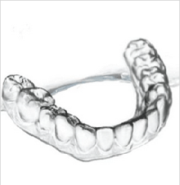
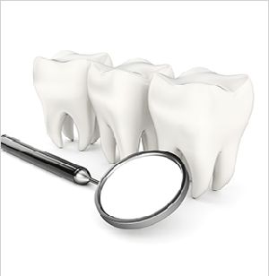

쉽게다가가는
교정진료의
간단한 교정케이스 또는 심미치료의 마무리교정 작업을
쉽게 하실수 있도록 D.I.C가 도와 드립니다.
투명하고 밝은미소
DIC Clear Aligner
D-Aligner 투명교정이란
순수 국내제품
시간과 비용 절약
편안한 교정
투명장치교정
LEARN MORE
치료과정 및 제작과정
PROCESS OF TREATMENT

1 환자 내원 인상체득
2 기공소 스캔
3 디지털 보정작업
4 3D프린터 제품생산
5 환자배송
LEARN MORE
기술력 및 장점
TECHNOLOGY

1 환자 상담용으로 최적합
2 쾌적한 치과 환경
3 쉽게 다가가는 교정진료의 첫 걸음
4 손쉽게 볼수 있는 치아 SET-UP 과정
5 보다 짧아진 교정 기간
LEARN MORE